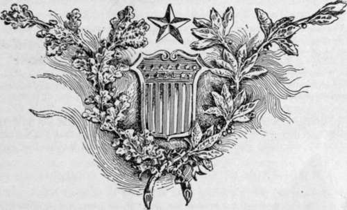

City Of Washington. Part 5
Description
This section is from the book "The National Capitol. Its Architecture Art And History", by George C. Hazelton, Jr. Also available from Amazon: The National Capitol Its Architecture Art and History.
City Of Washington. Part 5
President Washington, in a letter to the Commissioners, dated February 20, 1797, throws some light on the history of these early maps. " That many alterations have been made from L'Enfant's plan by Major Ellicott, with the approbation of the Executive, is not denied; that some were deemed essential, is avowed; and, had it not been for the materials which he happened to possess, it is probable that no engraving from Mr. L'Enfant's draught ever would have been exhibited to the public; for, after the disagreement took place between him and the Commissioners his obstinacy threw every difficulty in the way of its accomplishment. To this summary may be added, that Mr. Davidson * is mistaken if he supposes that the transmission of Mr. L'Enfant's plan of the city to Congress was the completion thereof; so far from it, it will appear, by the message which accompanied the same, that it was given as matter of information only, to show what state the business was in, and the return of it requested; that neither House of Congress passed any act consequent thereupon; that it remained, as before, under the control of the Executive ; that, afterwards several errors were discovered and corrected, many alterations made, and the appropriations, except as to the Capitol and President's house, struck out under that authority before it was sent to the engraver, intending that work, and the promulgation thereof, were to give the final and regulating stamp".
Ellicott's supervision, too, of the mapping and laying out of the city was brief. On the 23d of December, 1793, the Commissioners write complainingly to the President: 14 Major Ellicott after his absence great part of the summer and all the fall, as we hear in other service, returned to us in the winter, we do not accept his farther service. The business we believe was going on full as well without him " ; and, again, on January 28, 1794 : " We discharged him at our last meeting." Yet Ellicott must have been a man of talent; for in after years he achieved some distinction in the world of science, holding the professorship of Mathematics at West Point from 1812 until the time of his death, and this in spite of the fact that he and the Commissioners could not agree.
In contemplating the growth of the Federal City, it is amusing and instructive to read a letter of the Commissioners as late as the 19th of April, 1794, to Captain Igns Feswick, revealing, as it does, some of the difficulties in the way of building a city in the woods : " We were surprised yesterday to see the preparation for planting corn in Carrollsburgh. We cannot by silence give room to collect that, we give any consent and countenance to it. We do not imagine that the oats will be productive of so great inconvenience and as to those sowed we shall say nothing of them but we flatter ourselves that on reflection you will desist from planting Carrollsburgh in corn for it is certainly improper and injurious to the interest of the public and individuals".
On July 9, 1846, Congress passed an " act to retrocede the County of Alexandria in the District of Columbia to the State of Virginia," the Legislature of that State having previously passed an act for its acceptance. Thus that portion of the land on the Virginia shore of the Potomac became again the property of that State; that which remains in the District of Columbia to-day belonged originally only to the domain of Maryland.
Such is the story, briefly told, of the laying out of the Federal District, which until 1846 was ten miles square, and of the planting of the beautiful Federal City of which to-day the whole nation is proud, and which, by its artistic advancement, is rapidly commanding the admiration of the world. By the building of the capital of the States upon its banks, the Potowmak has fulfilled the Indian prophecy in its name : ** The river of the meeting of the tribes".
* The Commissioners state : " Mr. Davidson's object is to obtain additional property within the President's square".

Continue to: